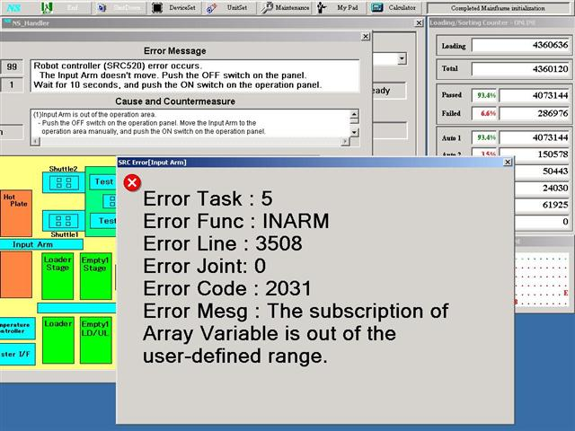
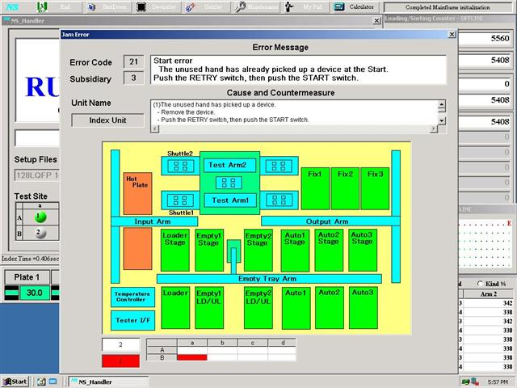

Service History
Subject: The subscription of Array Variable is out of the user-defined range
Handler Model: NS-8080
Controller: RC520
Date: 17 Mar 2010
Symptom
What does the error message " The subscription of Array Variable is out of the user-defined range" mean?
On the 15th March 2010, SCS engineer inform me that NS8080 has "The subscription of Array Variable is out of the user-defined range" error message (refer to Pic#1) while running Quad site 16x16 package. After accessing the issue, found that they pressed "Pause" and "Reset" button, followed by disable the site and continue the production in "Continous Mode". By doing a run without any devices (Dry. No Tray), the issue could be simulated. I had advise them to "One cycle" and clean out all the devices before disable site. Currently, the HMI used was version M9.10-SSY.

I tried out on NS6040 and NS7000 and the "The subscription of Array Variable is out of the user-defined range" error message did occurred.
NS6040 and NS7000
During the simulation (Dry. No Tray), "Pause" and "Reset" button was depressed, followed by disable the site and continue the run in "Continuous Mode".
"Site changed at Continuous" error message on NS6040 and "Continuous Start Error" error message on NS7000 occurred instead of the "The subscription of Array Variable is out of the user-defined range" error message.
NS8080 with HMI ver M10.11-SSY
During the simulation (Dry. No Tray) on NS8080, "Pause" and "Reset" button was depressed, followed by disable the site and continue the run in "Continuous Mode". "The subscription of Array Variable is out of the user-defined range" error message occurred but when running with devices (Normal), "Start Error" error message (refer o Pic#2) occurred.

Question
1) For NS8080 HMI ver M9.10-SSY, when disable site was not carried in proper way, the handler shouldn't give "The subscription of Array Variable is out of the user-defined range" error message. It should show "Continuous Start Error" instead. These will let user think that it was a torque error or was a big issue.
2) For NS8080 HMI ver 10.11-SSY, how come running without devices will have the same problem as HMI ver M9.10-SSY but running with devices does not have the problem?
Action
Cause